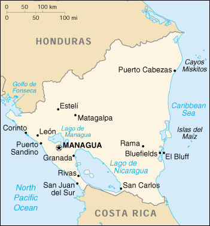

|
Nicaragua | |
| Introduction Geography People Government Economy Communications Transportation Military Transnational Issues | ||
|  | ||
| Nicaragua | Introduction | Top of Page |
| Background: | Settled as a colony of Spain in the 1520s, Nicaragua gained its independence in 1821. Violent opposition to governmental manipulation and corruption spread to all classes by 1978 and resulted in a short-lived civil war that brought the Marxist Sandinista guerrillas to power in 1979. Nicaraguan aid to leftist rebels in El Salvador caused the US to sponsor anti-Sandinista contra guerrillas through much of the 1980s. Free elections in 1990 and again in 1996 saw the Sandinistas defeated. The country has slowly rebuilt its economy during the 1990s, but was hard hit by Hurricane Mitch in 1998. |
| Nicaragua | Geography | Top of Page |
| Location: | Middle America, bordering both the Caribbean Sea and the North Pacific Ocean, between Costa Rica and Honduras |
| Geographic coordinates: | 13 00 N, 85 00 W |
| Map references: | Central America and the Caribbean |
| Area: |
total:
129,494 sq km
land: 120,254 sq km water: 9,240 sq km |
| Area - comparative: | slightly smaller than the state of New York |
| Land boundaries: |
total:
1,231 km
border countries: Costa Rica 309 km, Honduras 922 km |
| Coastline: | 910 km |
| Maritime claims: |
continental shelf:
natural prolongation
territorial sea: 200 NM |
| Climate: | tropical in lowlands, cooler in highlands |
| Terrain: | extensive Atlantic coastal plains rising to central interior mountains; narrow Pacific coastal plain interrupted by volcanoes |
| Elevation extremes: |
lowest point:
Pacific Ocean 0 m
highest point: Mogoton 2,438 m |
| Natural resources: | gold, silver, copper, tungsten, lead, zinc, timber, fish |
| Land use: |
arable land:
9%
permanent crops: 1% permanent pastures: 46% forests and woodland: 27% other: 17% (1993 est.) |
| Irrigated land: | 880 sq km (1993 est.) |
| Natural hazards: | destructive earthquakes, volcanoes, landslides, and occasionally severe hurricanes |
| Environment - current issues: | deforestation; soil erosion; water pollution; Hurricane Mitch damage |
| Environment - international agreements: |
party to:
Biodiversity, Climate Change, Climate Change-Kyoto Protocol, Desertification, Endangered Species, Hazardous Wastes, Law of the Sea, Nuclear Test Ban, Ozone Layer Protection, Ship Pollution, Wetlands
signed, but not ratified: Environmental Modification |
| Nicaragua | People | Top of Page |
| Population: | 4,918,393 (July 2001 est.) |
| Age structure: |
0-14 years:
38.98% (male 976,087; female 941,141)
15-64 years: 58.08% (male 1,418,555; female 1,438,096) 65 years and over: 2.94% (male 62,963; female 81,551) (2001 est.) |
| Population growth rate: | 2.15% (2001 est.) |
| Birth rate: | 27.64 births/1,000 population (2001 est.) |
| Death rate: | 4.82 deaths/1,000 population (2001 est.) |
| Net migration rate: | -1.33 migrant(s)/1,000 population (2001 est.) |
| Sex ratio: |
at birth:
1.05 male(s)/female
under 15 years: 1.04 male(s)/female 15-64 years: 0.99 male(s)/female 65 years and over: 0.77 male(s)/female total population: 1 male(s)/female (2001 est.) |
| Infant mortality rate: | 33.66 deaths/1,000 live births (2001 est.) |
| Life expectancy at birth: |
total population:
69.05 years
male: 67.1 years female: 71.11 years (2001 est.) |
| Total fertility rate: | 3.18 children born/woman (2001 est.) |
| HIV/AIDS - adult prevalence rate: | 0.2% (1999 est.) |
| HIV/AIDS - people living with HIV/AIDS: | 4,900 (1999 est.) |
| HIV/AIDS - deaths: | 360 (1999 est.) |
| Nationality: |
noun:
Nicaraguan(s)
adjective: Nicaraguan |
| Ethnic groups: | mestizo (mixed Amerindian and white) 69%, white 17%, black 9%, Amerindian 5% |
| Religions: | Roman Catholic 85%, Protestant |
| Languages: |
Spanish (official)
note: English and indigenous languages on Atlantic coast |
| Literacy: |
definition:
age 15 and over can read and write
total population: 65.7% male: 64.6% female: 66.6% (1995 est.) |
| Nicaragua | Government | Top of Page |
| Country name: |
conventional long form:
Republic of Nicaragua
conventional short form: Nicaragua local long form: Republica de Nicaragua local short form: Nicaragua |
| Government type: | republic |
| Capital: | Managua |
| Administrative divisions: | 15 departments (departamentos, singular - departamento), 2 autonomous regions* (regiones autonomistas, singular - region autonomista); Boaco, Carazo, Chinandega, Chontales, Esteli, Granada, Jinotega, Leon, Madriz, Managua, Masaya, Matagalpa, Nueva Segovia, Rio San Juan, Rivas, Atlantico Norte*, Atlantico Sur* |
| Independence: | 15 September 1821 (from Spain) |
| National holiday: | Independence Day, 15 September (1821) |
| Constitution: | 9 January 1987, with reforms in 1995 and 2000 |
| Legal system: | civil law system; Supreme Court may review administrative acts |
| Suffrage: | 16 years of age; universal |
| Executive branch: |
chief of state:
President Arnoldo ALEMAN Lacayo (since 10 January 1997); Vice President Leopoldo NAVARRO (since 24 October 2000); note - the president is both chief of state and head of government
head of government: President Arnoldo ALEMAN Lacayo (since 10 January 1997); Vice President Leopoldo NAVARRO (since 24 October 2000); note - the president is both chief of state and head of government cabinet: Council of Ministers appointed by the president elections: president and vice president elected on the same ticket by popular vote for a five-year term; election last held 20 October 1996 (next to be held 4 November 2001); note - in July 1995 the term of the office of the president was amended to five years election results: Arnoldo ALEMAN Lacayo (Liberal Alliance - ruling party - includes PLC, PALI, PLIUN, and PUCA) 51.03%, Daniel ORTEGA Saavedra (FSLN) 37.75%, Guillermo OSORNO (PCCN) 4.10%, Noel VIDAURRE (PCN) 2.26%, Benjamin LANZAS (PRONAL) 0.53%, other (18 other candidates) 4.33% |
| Legislative branch: |
unicameral National Assembly or Asamblea Nacional (93 seats; members are elected by proportional representation to serve five-year terms)
elections: last held 20 October 1996 (next to be held 4 November 2001) election results: percent of vote by party - Liberal Alliance (ruling party - includes PLC, PALI, PLIUN, and PUCA) 46.03%, FSLN 36.55%, PCCN 3.73%, PCN 2.12%, MRS 1.33%; seats by party - Liberal Alliance 42, FSLN 36, PCCN 4, PCN 3, PRONAL 2, MRS 1, PRN 1, PC 1, PLI 1, AU 1, UNO-96 Alliance 1 |
| Judicial branch: | Supreme Court or Corte Suprema (16 judges elected for seven-year terms by the National Assembly) |
| Political parties and leaders: | Conservative Party of Nicaragua or PCN [Dr. Fernando AGUERO Rocha]; Independent Liberal Party or PLI [Virgilio GODOY]; Liberal Alliance (ruling alliance including Liberal Constitutional Party or PLC, New Liberal Party or PALI, Independent Liberal Party for National Unity or PLIUN, and Central American Unionist Party or PUCA) [leader NA]; National Conservative Party or PC [Pedro SOLARZANO, Noel VIDAURRE]; National Project or PRONAL [Benjamin LANZAS]; Nicaraguan Party of the Christian Path or PCCN [Guillermo OSORNO, Roberto RODRIGUEZ]; Nicaraguan Resistance Party or PRN [Salvador TALAVERA]; Sandinista National Liberation Front or FSLN [Daniel ORTEGA Saavedra]; Sandinista Renovation Movement or MRS [Sergio RAMIREZ]; Unity Alliance or AU [Alejandro SERRANO]; Union Nacional Opositora 96 or UNO-96 [Alfredo CESAR Aguirre] |
| Political pressure groups and leaders: | National Workers Front or FNT is a Sandinista umbrella group of eight labor unions including - Farm Workers Association or ATC, Health Workers Federation or FETASALUD, Heroes and Martyrs Confederation of Professional Associations or CONAPRO, National Association of Educators of Nicaragua or ANDEN, National Union of Employees or UNE, National Union of Farmers and Ranchers or UNAG, Sandinista Workers Central or CST, and Union of Journalists of Nicaragua or UPN; Permanent Congress of Workers or CPT is an umbrella group of four non-Sandinista labor unions including - Autonomous Nicaraguan Workers Central or CTN-A, Confederation of Labor Unification or CUS, Independent General Confederation of Labor or CGT-I, and Labor Action and Unity Central or CAUS; Nicaraguan Workers' Central or CTN is an independent labor union; Superior Council of Private Enterprise or COSEP is a confederation of business groups |
| International organization participation: | BCIE, CACM, CCC, ECLAC, FAO, G-77, IADB, IAEA, IBRD, ICAO, ICFTU, ICRM, IDA, IFAD, IFC, IFRCS, ILO, IMF, IMO, Intelsat, Interpol, IOC, IOM, ISO (correspondent), ITU, LAES, LAIA (observer), NAM, OAS, OPANAL, OPCW, PCA, UN, UNCTAD, UNESCO, UNHCR, UNIDO, UPU, WCL, WHO, WIPO, WMO, WToO, WTrO |
| Diplomatic representation in the US: |
chief of mission:
Ambassador Alfonso ORTEGA Urbina
chancery: 1627 New Hampshire Avenue NW, Washington, DC 20009 telephone: [1] (202) 939-6570 FAX: [1] (202) 939-6542 consulate(s) general: Houston, Los Angeles, Miami, New Orleans, New York |
| Diplomatic representation from the US: |
chief of mission:
Ambassador Oliver P. GARZA
embassy: Apartado Postal 327, Kilometer 4.5 Carretera Sur, Managua mailing address: APO AA 34021 telephone: [505] (2) 662298, 666010, 666012, 666013, 666015, 666018, 666026, 666027, 666032, 666033 FAX: [505] (2) 669074 |
| Flag description: | three equal horizontal bands of blue (top), white, and blue with the national coat of arms centered in the white band; the coat of arms features a triangle encircled by the words REPUBLICA DE NICARAGUA on the top and AMERICA CENTRAL on the bottom; similar to the flag of El Salvador, which features a round emblem encircled by the words REPUBLICA DE EL SALVADOR EN LA AMERICA CENTRAL centered in the white band; also similar to the flag of Honduras, which has five blue stars arranged in an X pattern centered in the white band |
| Nicaragua | Economy | Top of Page |
| Economy - overview: | Nicaragua, one of the hemisphere's poorest countries, faces low per capita income, flagging socio-economic indicators, and huge external debt. While the country has made progress toward macro-economic stabilization over the past few years, a banking crisis and scandal has shaken the economy. Managua will continue to be dependent on international aid and debt relief under the Heavily Indebted Poor Countries (HIPC) initiative. Donors have made aid conditional on improving governability, the openness of government financial operation, poverty alleviation, and human rights. Nicaragua met the conditions for additional debt service relief in December 2000. Growth should remain moderate to high in 2001. |
| GDP: | purchasing power parity - $13.1 billion (2000 est.) |
| GDP - real growth rate: | 5% (2000 est.) |
| GDP - per capita: | purchasing power parity - $2,700 (2000 est.) |
| GDP - composition by sector: |
agriculture:
31.6%
industry: 22.8% services: 45.6% (1999) |
| Population below poverty line: | 50% (2000 est.) |
| Household income or consumption by percentage share: |
lowest 10%:
1.6%
highest 10%: 39.8% (1993) |
| Inflation rate (consumer prices): | 11% (2000 est.) |
| Labor force: | 1.7 million (1999) |
| Labor force - by occupation: | services 43%, agriculture 42%, industry 15% (1999 est.) |
| Unemployment rate: | 20% plus considerable underemployment (1999 est.) |
| Budget: |
revenues:
$734 million
expenditures: $836 million, including capital expenditures of $NA (1999 est.) |
| Industries: | food processing, chemicals, machinery and metal products, textiles, clothing, petroleum refining and distribution, beverages, footwear, wood |
| Industrial production growth rate: | 4.4% (2000 est.) |
| Electricity - production: | 2.349 billion kWh (1999) |
| Electricity - production by source: |
fossil fuel:
67.26%
hydro: 17.71% nuclear: 0% other: 15.03% (1999) |
| Electricity - consumption: | 2.265 billion kWh (1999) |
| Electricity - exports: | 20 million kWh (1999) |
| Electricity - imports: | 100 million kWh (1999) |
| Agriculture - products: | coffee, bananas, sugarcane, cotton, rice, corn, tobacco, sesame, soya, beans; beef, veal, pork, poultry, dairy products |
| Exports: | $631 million (f.o.b., 2000 est.) |
| Exports - commodities: | coffee, shrimp and lobster, cotton, tobacco, beef, sugar, bananas; gold |
| Exports - partners: | US 37.7%, El Salvador 12.5%, Germany 9.8%, Costa Rica 5.1%, Spain 2.5%, France 2.1% (1999) |
| Imports: | $1.6 billion (f.o.b., 2000 est.) |
| Imports - commodities: | machinery and equipment, raw materials, petroleum products, consumer goods |
| Imports - partners: | US 34.5%, Costa Rica 11.4%, Guatemala 7.3%, Panama 6.9%, Venezuela 5.9%, El Salvador 5.5% (1999) |
| Debt - external: | $6.4 billion (2000 est.) |
| Economic aid - recipient: | NA |
| Currency: | gold cordoba (NIO) |
| Currency code: | NIO |
| Exchange rates: | gold cordobas per US dollar - 12.96 (November 2000), 12.69 (2000 est.), 11.81 (1999), 10.58 (1998), 9.45 (1997), 8.44 (1996) |
| Fiscal year: | calendar year |
| Nicaragua | Communications | Top of Page |
| Telephones - main lines in use: | 140,000 (1996) |
| Telephones - mobile cellular: | 7,911 (1997) |
| Telephone system: |
general assessment:
inadequate system being upgraded by foreign investment
domestic: low-capacity microwave radio relay and wire system being expanded; connected to Central American Microwave System international: satellite earth stations - 1 Intersputnik (Atlantic Ocean region) and 1 Intelsat (Atlantic Ocean) |
| Radio broadcast stations: | AM 63, FM 32, shortwave 1 (1998) |
| Radios: | 1.24 million (1997) |
| Television broadcast stations: | 3 (plus seven low-power repeaters) (1997) |
| Televisions: | 320,000 (1997) |
| Internet country code: | .ni |
| Internet Service Providers (ISPs): | 3 (2000) |
| Internet users: | 20,000 (2000) |
| Nicaragua | Transportation | Top of Page |
| Highways: |
total:
16,382 km
paved: 1,818 km unpaved: 14,564 km (1998) |
| Waterways: | 2,220 km (including 2 large lakes) |
| Pipelines: | crude oil 56 km |
| Ports and harbors: | Bluefields, Corinto, El Bluff, Puerto Cabezas, Puerto Sandino, Rama, San Juan del Sur |
| Merchant marine: | none (2000 est.) |
| Airports: | 182 (2000 est.) |
| Airports - with paved runways: |
total:
11
2,438 to 3,047 m: 2 1,524 to 2,437 m: 3 914 to 1,523 m: 3 under 914 m: 3 (2000 est.) |
| Airports - with unpaved runways: |
total:
171
1,524 to 2,437 m: 1 914 to 1,523 m: 25 under 914 m: 145 (2000 est.) |
| Nicaragua | Military | Top of Page |
| Military branches: | Army, Navy, Air Force |
| Military manpower - military age: | 18 years of age |
| Military manpower - availability: | males age 15-49: 1,269,322 (2001 est.) |
| Military manpower - fit for military service: | males age 15-49: 779,267 (2001 est.) |
| Military manpower - reaching military age annually: | males: 58,232 (2001 est.) |
| Military expenditures - dollar figure: | $26 million (FY98) |
| Military expenditures - percent of GDP: | 1.2% (FY98) |
| Nicaragua | Transnational Issues | Top of Page |
| Disputes - international: | territorial disputes with Colombia over the Archipelago de San Andres y Providencia and Quita Sueno Bank; with respect to the maritime boundary question in the Golfo de Fonseca, the ICJ referred to the line determined by the 1900 Honduras-Nicaragua Mixed Boundary Commission and advised that some tripartite resolution among El Salvador, Honduras, and Nicaragua likely would be required; maritime boundary dispute with Honduras in the Caribbean Sea is before the ICJ; legal dispute over navigational rights of San Juan River on border with Costa Rica |
| Illicit drugs: | transshipment point for cocaine destined for the US and transshipment point for arms-for-drugs dealing |
{kind=link}